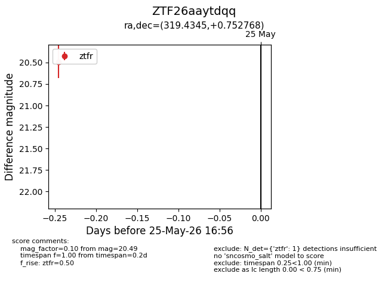
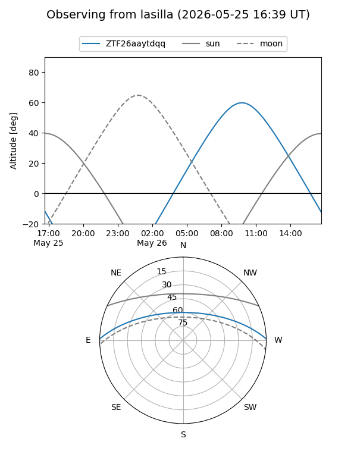
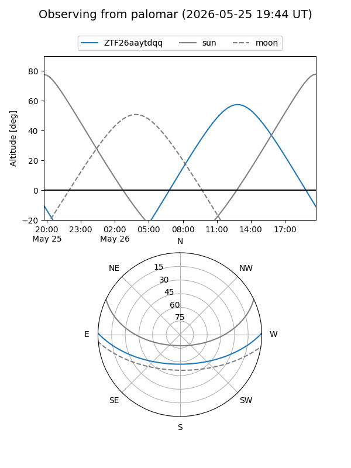

ZTF26aaytdqq
Target ZTF26aaytdqq at 2026-05-25 16:58
Aliases and brokers:
lsst-FINK: link
lsst-Lasair: link
lsst-ALeRCE: link
ztf-FINK: link
ztf-Lasair: link
ztf-ALeRCE: link
alt names
ZTF26aaytdqq (ztf,fink_ztf)
Coordinates:
equatorial (ra, dec) = 319.4345,+0.75277
equatorial (HMS+DMS) = 21:17:44.28,+00:45:09.97
galactic (l, b) = (52.3697,-31.62012)
Flags:
Photometry:
last ztfr=20.49
1 ztfr detections
Lightcurve

Visibility


Additional plots